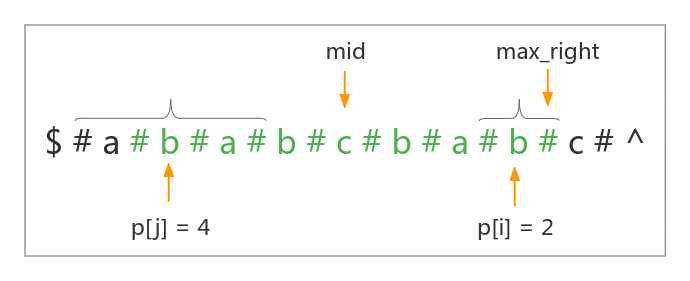

MANACHER
介绍
Manacher 算法可以线性的计算出一个字符串的最长回文串的长度。
算法过程
Manacher 要求字符串的长度是奇数。所以我们在得到一个字符串后，先在这个字符串的每两个字符中间添加一个这个字符串中不会出现的字符，还要在整个串的前后添加这个字符，为了使边界好处理，我们再在整个串的前后各添加一个不是前面那个字符的在这个字符串中不会出现的字符，即：
Manacher 要求维护一个最右回文子串（并非最长回文子串）的中心位置 mid 与右边界位置 max_right ，以及一个 \(p\) 数组，\(p[i]\) 代表的是以位置 \(i\) 为中心的最长的回文串的半径。
例如下面这个字符串的 \(p[8] = 6\)：

然后在遍历整个字符串的过程中用下标 \(i\) 来不停地更新这两个值：
首先需要知道的是：在算法的整个过程中，一定有 \(i \geq mid、i \leq max\_right\)，因为我们会让 \(i\) 从串首遍历到串尾，如果以 \(i\) 为中心的最长的回文串右边界一旦大于等于 \(max\_right\)，就会更新 \(mid = i\)，\(max\_right\) 为以 \(i\) 为中心的最长回文串的右边界，显然整个遍历的过程有 \(mid \leq i \leq max\_right\)。
根据回文串的对称性，如果对称过来的 \(j = mid \times 2 - i\) 位置的回文串左边界大于维护的最右回文子串的左边界，即： \(j - p[j] > max\_left\)（代码中不会维护 \(max\_left\) 变量，这里使用它是为了更好地理解），一定有 \(p[i] = p[j]\)。

如果有 \(j\) 位置的回文串左边界小于维护的最右回文子串的左边界，即：\(j - p[j] < max\_left\)，一定有 \(p[i] = max\_right - i + 1\)（因为对称串在最右回文子串外的部分一定不会与最右边界外的一部分串对称相等，否则我们维护的最右回文子串的右边界就能继续拓展，这与我们维护的是以 \(mid\) 为中心的长度最大的最右回文子串矛盾，所以一定有 \(p[i] = max\_right - i + 1\)）

如果有 \(j\) 位置的回文串左边界等于维护的最右回文子串的左边界，即：\(j - p[j] = max\_left\)，这个时候不能确定 \(p[i]\) 的值，因为我们仅能通过最右回文知道 \(j\) 的左边界的前一个字符与右边界的后一个字符不相等；但不能确定以 \(i\) 为中心的回文串能否继续扩展。这个时候我们就需要朴素的将以 \(i\) 为中心的回文串向外拓展直到无法拓展，然后更新最右回文子串为以 \(i\) 为中心的最长回文串。

代码
#include <cstdio> #include <cstring> #include <algorithm> using namespace std; const int maxn = 2e5 + 5; int n; char a[maxn], b[maxn]; // a 表示原串，b 表示新串 int p[maxn]; // a = "abababc", b = "$#a#b#a#b#a#b#c#^"; void init() { int k = 0; b[k ++ ] = '$'; b[k ++ ] = '#'; for (int i = 0; i < n; ++ i) b[k ++ ] = a[i], b[k ++ ] = '#'; b[k ++ ] = '^'; n = k; } void manacher() { int max_right = 0, mid; // 维护一个最右回文子串（并非最长回文子串） for (int i = 1; i < n; ++ i) { if (i < max_right) // 1. 如果 i < max_right，直接对称看 j = mid * 2 - i 的位置最长回文串半径 p[i] = min(p[mid * 2 - i], max_right - i); else // 2. 否则会朴素拓宽 p[i] = 1; /* * 朴素拓宽，但是只有 i < max_right，且 j = mid * 2 - i 位置的回文串的左边界恰好在维护的最右回文子串左边界处时 * 才会真正的开始拓宽，否则这里只会运行一次 * ml mid max_right * | | | * V V V * |-----------------------------------------------| * +----j----+ | +----i----+ */ while (b[i - p[i]] == b[i + p[i]]) p[i] ++ ; if (i + p[i] > max_right) { // 更新 max_right 与 i 的值 max_right = i + p[i]; mid = i; } } } int main() { scanf("%s", a); n = strlen(a); init(); manacher(); int res = 0; for (int i = 0; i < n; ++ i) res = max(res, p[i] - 1); printf("%d\n", res); return 0; }